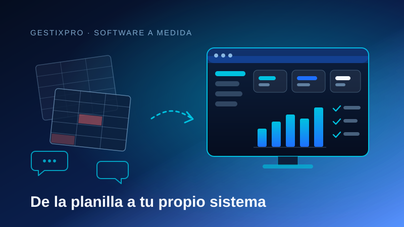

¿Tu pyme vive en planillas Excel y chats de WhatsApp? Cuándo conviene un software a medida y cómo dar el salto
Stock que no cuadra, datos en el celular de una persona y cierres de mes eternos. Así sabes que tu negocio superó la planilla y así pasas a tu propio sistema, paso a paso.

Si tu negocio funciona con una planilla Excel para el stock, otra para los clientes, un cuaderno para las deudas y diez grupos de WhatsApp para coordinar pedidos, no eres el único. Así parten muchísimas pymes y emprendimientos en Chile, y está bien: al principio, la planilla es rápida, gratis y cualquiera la entiende.
El problema aparece cuando el negocio crece y la planilla no. Ese es el momento en que pasas más tiempo ordenando información que vendiendo. En este artículo te cuento cómo darte cuenta de que llegaste a ese punto, qué cuesta seguir así y cómo pasar a un software a medida sin que se transforme en un proyecto eterno.
Señales de que tu negocio ya superó la planilla
No necesitas ser una empresa grande para necesitar un sistema propio. Revisa si te pasa alguna de estas situaciones:
- Hay varias versiones de la verdad: "stock_final.xlsx", "stock_final_v2.xlsx" y "stock_bueno_ESTE.xlsx". Nadie sabe cuál es la correcta y cada persona trabaja con la suya.
- Vendes algo que ya no tienes: el cliente paga por transferencia, vas a buscar el producto y descubres que se vendió ayer en el local, pero nadie actualizó la planilla.
- La información vive en el celular de una persona: si tu vendedora o tu socio se enferma o se va, los datos de clientes, pedidos y acuerdos se van con su WhatsApp.
- Copias y pegas lo mismo todo el día: el pedido llega por WhatsApp, lo anotas en Excel, después lo copias a la guía de despacho y otra vez al resumen del mes.
- Cerrar el mes es un drama: armar un reporte de ventas, comisiones o cuentas por cobrar te toma un fin de semana completo y aun así no confías en el resultado.
- No puedes responder preguntas simples: ¿cuál es tu producto más rentable?, ¿qué clientes no compran hace tres meses?, ¿cuánto te deben hoy? Si la respuesta es "tendría que revisar", la información existe, pero no te sirve.
Si te identificaste con dos o más, tu negocio ya está pagando el costo de no tener un sistema.
Lo que realmente te cuesta seguir así
La planilla parece gratis, pero se paga de otras formas. Se paga en horas: las tuyas o las de tu equipo, dedicadas a transcribir, buscar y corregir datos en vez de atender clientes. Se paga en errores: un pedido duplicado, una boleta con el monto equivocado, un cliente al que le cobraste dos veces o al que nunca le cobraste. Y se paga en decisiones a ciegas: compras mercadería "por intuición" porque no tienes a mano lo que realmente se vende.
Hay un costo menos visible: la seguridad de los datos de tus clientes. Una planilla con nombres, RUT, teléfonos y direcciones que viaja por correo, pendrive o WhatsApp es difícil de proteger. En Chile, además, ya está publicada la Ley 21.719, la nueva ley de protección de datos personales, que eleva las exigencias sobre cómo las empresas recolectan, guardan y usan esa información. Ordenar tus datos en un sistema con usuarios, permisos y respaldos es un buen paso para prepararte.
¿Software a medida o un sistema "de caja"?
No siempre necesitas desarrollar algo desde cero, y prefiero decírtelo de entrada. Hay buenos sistemas estándar para contabilidad, facturación o agenda. La pregunta es si tu forma de trabajar cabe en ellos o si terminas adaptando tu negocio al software, con parches y planillas paralelas.
Un software a medida conviene cuando:
- Tu proceso tiene reglas propias que ningún sistema genérico contempla: cómo cotizas, cómo calculas comisiones, cómo asignas turnos o cómo haces seguimiento a tus alumnos o pacientes.
- Hoy usas varias herramientas que no se hablan entre sí y necesitas una sola fuente de información.
- Pagas licencias por usuario de un sistema del que usas una pequeña parte, y aun así sigues con Excel al lado.
- Quieres que tus clientes hagan algo por su cuenta: revisar el estado de su pedido, descargar un documento o reservar, sin escribirte.
A veces la mejor solución es mixta: un sistema estándar para lo tributario y una aplicación a medida para tu operación, conectados entre sí. Lo importante es elegir con criterio y no por moda.
Cómo pasar de la planilla a tu propio sistema, paso a paso
Desarrollar software no tiene por qué ser un proyecto de un año. Así lo trabajo con mis clientes:
- 1. Mapear el proceso real: antes de hablar de pantallas, conversamos de cómo funciona hoy tu negocio. ¿Por dónde entra un pedido?, ¿quién lo toca?, ¿dónde se traba? Ahí suelen aparecer los cuellos de botella que más tiempo te quitan.
- 2. Elegir el primer problema a resolver: no se digitaliza todo de una vez. Partimos por lo que más duele o lo que más plata deja en la mesa: inventario, pedidos, agenda, cobranza.
- 3. Construir una primera versión funcional: una versión acotada que tu equipo pueda usar de verdad en pocas semanas, en vez de esperar meses por un sistema "completo".
- 4. Migrar tus datos: tus planillas no se pierden. La información que ya tienes se limpia y se carga al sistema para que partas con tu historial.
- 5. Capacitar y ajustar: el sistema se prueba con el uso diario. Escucho lo que tu equipo reclama y lo voy ajustando hasta que trabajar en él sea más fácil que volver al Excel.
- 6. Crecer por etapas: cuando la primera parte funciona, sumamos módulos: reportes, portal para clientes, conexión con tu sitio web o con un agente de WhatsApp.
Criterios para no equivocarte al contratar
Si vas a encargar un desarrollo, conmigo o con quien sea, fíjate en esto:
- Que te pregunten por tu negocio antes que por la tecnología. Si la primera conversación es sobre lenguajes de programación, mala señal.
- Que el sistema funcione en el celular. En muchas pymes, buena parte del trabajo se hace desde el teléfono, en terreno o en el local.
- Que tus datos sean tuyos: que puedas exportarlos cuando quieras y que existan respaldos automáticos.
- Que haya usuarios y permisos: no todos en tu equipo necesitan ver ventas, costos o datos de clientes.
- Que el alcance esté por escrito: qué incluye la primera versión, en qué plazo y qué queda para etapas siguientes.
- Que haya soporte después de la entrega: un sistema se usa durante años y siempre surgen ajustes.
Por qué hacerlo conmigo en GestixPro
En GestixPro trabajo contigo directamente, sin intermediarios. Eso significa que la persona que escucha tu problema es la misma que diseña la solución y te acompaña después. Además, como también desarrollo sitios web, campañas digitales y agentes de IA, puedo conectar tu sistema con el resto de tu presencia digital en vez de dejarlo como una isla.
Si quieres ver cómo trabajo la información de un negocio, revisa KenpoChile: el sitio ordena en páginas propias su directorio de escuelas y la información de cada cinturón, para que cualquiera la encuentre en segundos. O sitios como Contabilidades Mel y AR Prevención, pensados para que el cliente encuentre rápido lo que necesita y pueda contactar o cotizar sin vueltas.
Y si te preocupa la inversión, cuéntame tu caso: hay instrumentos públicos de apoyo a pymes que en algunas convocatorias permiten financiar proyectos de digitalización, y también te ayudo a revisar si tu proyecto podría calzar con alguno.
Da el primer paso
No necesitas tener claro qué software quieres. Basta con que me cuentes qué tarea te está quitando más tiempo hoy. Con eso te propongo por dónde partir, sin compromiso.
Escríbeme por WhatsApp y conversemos de tu negocio →
¿Conoces a alguien que siga peleando con sus planillas? Con el programa de referidos de GestixPro recibes una comisión por cada cliente que me recomiendes y contrate.